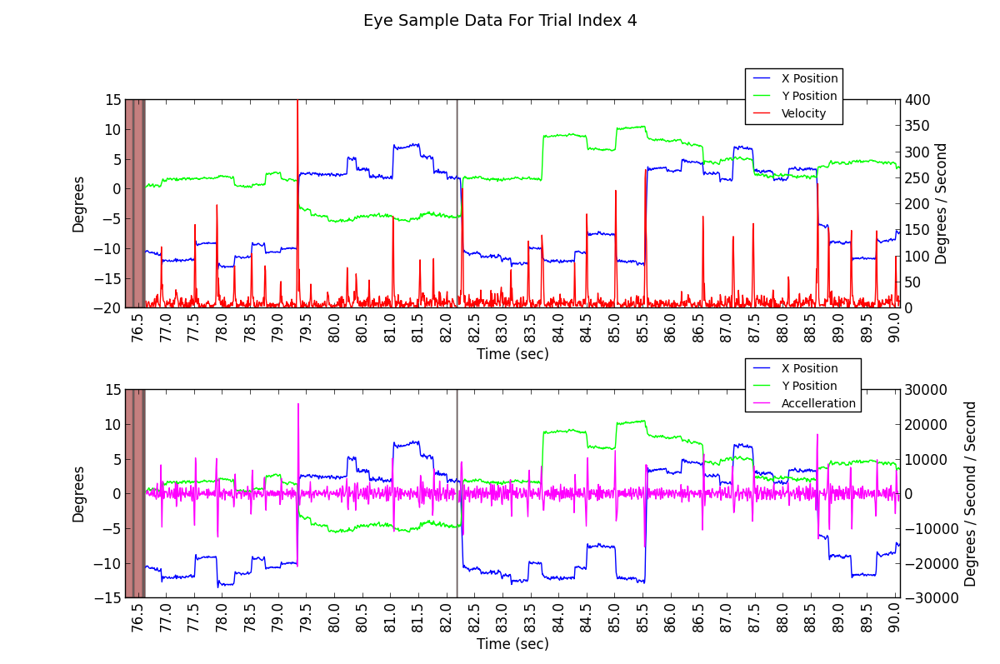
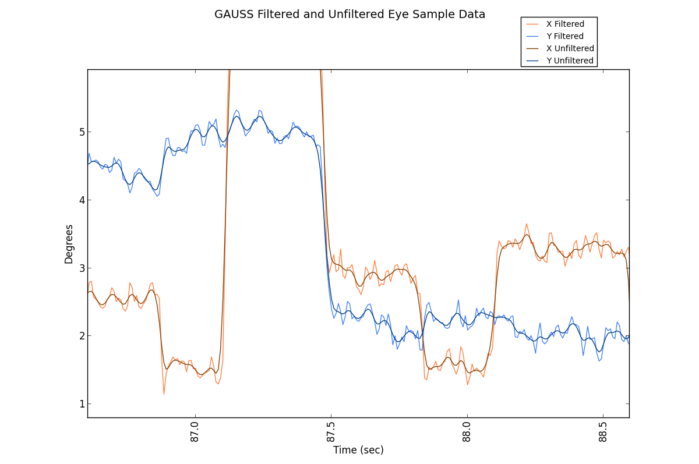

|
|
|
|
This section of the workshop will cover some common areas of eye data processing, including:
When using PsychoPy and the ioHub the experiment creator can specify that position information should be represented in one of several coordinate spaces, including pixels and visual degrees. When visual degrees are specified, stimuli are drawn using visual degree coordinates and sizes, and position data returned by devices capable of doing so (like the mouse or an Eye Tracker), will also report position in visual degrees.
In some cases you may wish to use pixels for the coordinate space in your experiment, but convert the eye position data to visual degrees after the data has been collected. Examples of this include wanting to use a different pixel to visual degree calculation or having incorrect or unknown eye to calibration plane distance during recording. A fanother use case for pixel2degree conversion is when using a remote eye tracker with the nead free and moving about. Ssome of the remote eye tracking systems available now report the current eye to screen distance for each sample collected, and this can be used to calculate visual degrees without using a fixed eye distance for a whole trial.
In situations like the above, using the example code provide here will allow the conversion of pixel data to angle data; either using a fixed eye to calibration plain distance, or a varying distance based on data in an array that is the same length as the pixel position data being processed. The relevent section of the example sript is:
# Load the ioDataStore data file
# ....example code in many of the scripts provided ....
#
# Provide the necessary display geometry information.
# Note that in the future this default information could be read from
# the loaded data file so it does not need to be manually entered here.
#
calibration_area_info=dict(display_size_mm=(500,280.0),
display_res_pix=(1280.0,1024.0),
eye_distance_mm=550.0)
# Use the VisualAngleCalc class defined in the common_workshop_functions to
# generate an object that can convert data from pixel coordinates
# to visual angles based on the supplied calibration / display surface geometry
# and eye distance.
#
vac=VisualAngleCalc(**calibration_area_info)
# Calculate the visual degree position in x and y for the given pixel position arrays.
# If an array of head position data is provided to the pix2deg method,
# the degrees data will be calculated for each eye sample useing the head
# distance reported for that sample.
#
degree_x,degree_y=vac.pix2deg(pix_x,pix_y)
# Do as you may with the angle data.
# .....
A full python script which loads eye data from a iodataStore file, converts it to degrees, and plots the pixel and degree eye position sample traces can be found at python_source/data_processing/pixels2angle.py
Eye Position Traces in Pixel and Visual Degree Coordinates
Velocity and Acceleration are often calculated using eye sample position data for use in eye event parsing algorithms (well, parsers based on velocity thresholds at least ;) ). Data is converted from pixel to visual degree coordinate space before being passed to the velocity and acceleration algorithms.
The following function can be used to calculate the instantaneous velocity from eye position sample data:
def calculateVelocity(time,degrees_x,degrees_y=None):
"""
Calculate the instantaneous velocity (degrees / second) for data points in
degrees_x and (optionally) degrees_y, using the time numpy array for
time delta information.
Numpy arrays time, degrees_x, and degrees_y must all be 1D arrays of the same
length.
If both degrees_x and degrees_y are provided, then the euclidian distance
between each set of points is calculated and used in the velocity calculation.
time must be in seconds.msec units, while degrees_x and degrees_y are expected
to be in visual degrees. If the position traces are in pixel coordinate space,
use the VisualAngleCalc class to convert the data into degrees.
"""
if degrees_y is None:
data=degrees_x
else:
data=np.sqrt(degrees_x*degrees_x+degrees_y*degrees_y)
velocity_between = (data[1:]-data[:-1])/(time[1:]-time[:-1])
velocity = (velocity_between[1:]+velocity_between[:-1])/2.0
return velocity
A full example python script which loaded eye data from an ioDataStore file, calculates the velocity for one trial of the data, and plots the result can be found in the workshop source materials: python_source/data_processing/velocity_accelleration.py
Accelleration, or the rate of velocity change over time, can be calculated at follows:
def calculateAccelleration(time,data_x,data_y=None):
"""
Calculate the accelleration (degrees / second / second) for data points in
degrees_x and (optionally) degrees_y, using the time numpy array for
time delta information.
"""
velocity=calculateVelocity(time,data_x,data_y)
accel = calculateVelocity(time[1:-1],velocity)
return accel
A full example python script which loaded eye data from an ioDataStore file, calculates the velocity for one trial of the data, and plots the result can be found in the workshop source materials: python_source/data_processing/velocity_accelleration.py
Eye Angle Traces with associated XY Velocity and Accelleration Trace
Magnified Eye Angle Traces with associated XY Velocity and Acceleration Trace
With any eye tracking system it is often beneficial to filter the sample data data recorded device to:
- Reduce high-frequency noise from eye position data, possibly increasing precision measures.
- Decrease velocity and acceleration noise in the eye signal, possibly improving eye event detection (Saccades, Fixations, etc).
When using a filtering algorithm on your eye sample data, it is important to consider:
A. What effect does the filter have on the reported characteristics of the occulomotor behaviour:
- Are small saccades being removed?
- Is the duration, amplitude, peak velocity, or other such properties of saccades being significantly effected?
- Are over-shoots to target locations being exagerated?
There is often no one right answer to the above questions and considerations. The experimental paradigm being run and the way in which the resulting eye data collected will be analyzed can significantly influence what may be considered as correct.
With this in mind, it can be fruitful (and fun) to try different filtering algorithms and see how each changes the data being reported; both for better or worse.
All the example filters demonstrated in the workshop can be used from the same python file. Simply uncomment the filter you wish to test and comment out the previously active filter.
# -*- coding: utf-8 -*-
# This source file is available in python_source/data_processing/filters.py
from psychopy.iohub.datastore.util import ExperimentDataAccessUtility
from psychopy.iohub import EventConstants
import numpy as np
import matplotlib.pyplot as plt
import matplotlib.transforms as mtransforms
from matplotlib.font_manager import FontProperties
from scipy.ndimage.filters import gaussian_filter1d
from scipy.signal import butter,filtfilt,medfilt
from common_workshop_functions import processSampleEventGaps,VisualAngleCalc,savitzky_golay
calibration_area_info=dict(display_size_mm=(500,280.0),
display_res_pix=(1280.0,1024.0),
eye_distance_mm=550.0)
def filterEyeSamples(filter_type,xpix,ypix,pupil,invalid_data_mask,**kwargs):
processSampleEventGaps(xpix,ypix,pupil,invalid_data_mask,'linear')
vac=VisualAngleCalc(**calibration_area_info)
xdeg,ydeg=vac.pix2deg(xpix,ypix)
if filter_type=='butter':
wn=kwargs.get('wn',0.2)
order=kwargs.get('order',2)
b, a = butter(order, wn, 'low')
x_filtered = filtfilt(b, a, xdeg)
y_filtered = filtfilt(b, a, ydeg)
elif filter_type=='gauss':
sigma=kwargs.get('sigma',2)
x_filtered = gaussian_filter1d(xdeg,sigma)
y_filtered = gaussian_filter1d(ydeg,sigma)
elif filter_type=='median':
size=kwargs.get('size',5)
x_filtered=medfilt(xdeg,size)
y_filtered=medfilt(ydeg,size)
elif filter_type=='sg':
size=kwargs.get('size',7)
order=kwargs.get('order',2)
x_filtered=savitzky_golay(xdeg,window_size=size, order=order)
y_filtered=savitzky_golay(ydeg,window_size=size, order=order)
elif filter_type=='average':
weights=np.asarray(kwargs.get('weights',[1.,2.,3.,2.,1.]))
weights=weights/np.sum(weights)
x_filtered=np.convolve(xdeg, weights,'same')
y_filtered=np.convolve(ydeg, weights,'same')
else:
raise ValueError('Unknown Filter Type: %s. Must be one of %s'%(filter_type,str(['sg','butter','gauss','median'])))
xdeg[invalid_data_mask]=np.NaN
ydeg[invalid_data_mask]=np.NaN
x_filtered[invalid_data_mask]=np.NaN
y_filtered[invalid_data_mask]=np.NaN
return (xdeg,ydeg),(x_filtered,y_filtered)
# Enter data for use in this example
#
# We will do the pixel to degree calculation and plotting for one trial in
# the sample data file, select which to use (0 - 4):
#
TRIAL_INDEX=3
# Enter the eye tracker setup used for the data collection.
#
calibration_area_info=dict(display_size_mm=(500,280.0),
display_res_pix=(1280.0,1024.0),
eye_distance_mm=550.0)
dataAccessUtil=ExperimentDataAccessUtility('../hdf5_files','remote_data.hdf5',
experimentCode=None,sessionCodes=[])
# Get the filtered event data.
#
event_type=EventConstants.BINOCULAR_EYE_SAMPLE
retrieve_attributes=('time','left_gaze_x','left_gaze_y','left_pupil_measure1',
'right_gaze_x','right_gaze_y','right_pupil_measure1','status')
trial_event_data=dataAccessUtil.getEventAttributeValues(event_type,
retrieve_attributes,
conditionVariablesFilter=None,
startConditions={'time':('>=','@TRIAL_START@')},
endConditions={'time':('<=','@TRIAL_END@')},
)
trial_data=trial_event_data[TRIAL_INDEX]
time=trial_data.time
status=trial_data.status
pix_x=trial_data.right_gaze_x
pix_y=trial_data.right_gaze_y
pupil=trial_data.right_pupil_measure1
invalid_data_mask=trial_data.status%10>=2
# No need to keep the hdf5 file open anymore...
#
dataAccessUtil.close()
# Get the range to use for the x axis
#
tmin=time.min()//1
tmax=time.max()//1+1
#filter_label='butter'
#unfiltered,filtered=filterEyeSamples(filter_label,pix_x,pix_y,pupil,invalid_data_mask,wn=0.2,order=2)
#filter_label='gauss'
#unfiltered,filtered=filterEyeSamples(filter_label,pix_x,pix_y,pupil,invalid_data_mask,sigma=1.5)
#filter_label='median'
#unfiltered,filtered=filterEyeSamples(filter_label,pix_x,pix_y,pupil,invalid_data_mask,size=5)
#filter_label='sg'
#unfiltered,filtered=filterEyeSamples(filter_label,pix_x,pix_y,pupil,invalid_data_mask,size=7,order=2)
filter_label='average'
unfiltered,filtered=filterEyeSamples(filter_label,pix_x,pix_y,pupil,invalid_data_mask,weights=[.5,1.5,3,6,3,1.5,.5])
unfiltered_x,unfiltered_y=unfiltered
filtered_x,filtered_y=filtered
# Create a plot of filtered and unfiltered eye position for the full trial.
#
fig = plt.figure(figsize=(12,8))
fig.suptitle("%s Filtered and Unfiltered Eye Sample Data"%(filter_label.upper()),fontsize=14)
gax=plt.gca()
gax.plot(time, unfiltered_x,label='X Filtered',color=(1,.5,.25))
gax.plot(time, unfiltered_y,label='Y Filtered',color=(.25,.5,1))
gax.plot(time, filtered_x,label='X Unfiltered',color=(.5,.25,0))
gax.plot(time, filtered_y,label='Y Unfiltered',color=(0,.25,.5))
plt.xticks(np.arange(tmin,tmax,0.5),rotation='vertical')
trans = mtransforms.blended_transform_factory(gax.transData, gax.transAxes)
gax.fill_between(time, 0, 1, where=invalid_data_mask, facecolor='DarkRed',
alpha=0.5, transform=trans)
gax.set_ylabel('Degrees')
gax.set_xlabel('Time (sec)')
box = gax.get_position()
gax.set_position([box.x0, box.y0, box.width, box.height-.05])
fontP = FontProperties()
fontP.set_size('small')
plt.legend(loc='upper left', bbox_to_anchor=(.8, 1.15), borderaxespad=0,prop = fontP)
plt.show()
Unfiltered vs. Butterworth Filtered Eye Position Data
Unfiltered vs. Gaussian Filtered Eye Position Data
Unfiltered vs. Median Filtered Eye Position Data
Unfiltered vs. Savitzky Golay Filtered Eye Position Data
Unfiltered vs. Weighted Moving Average Filtered Eye Position Data
Content to Be Moved from notebook.